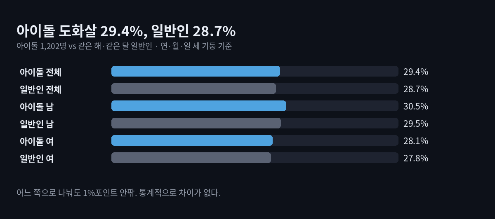
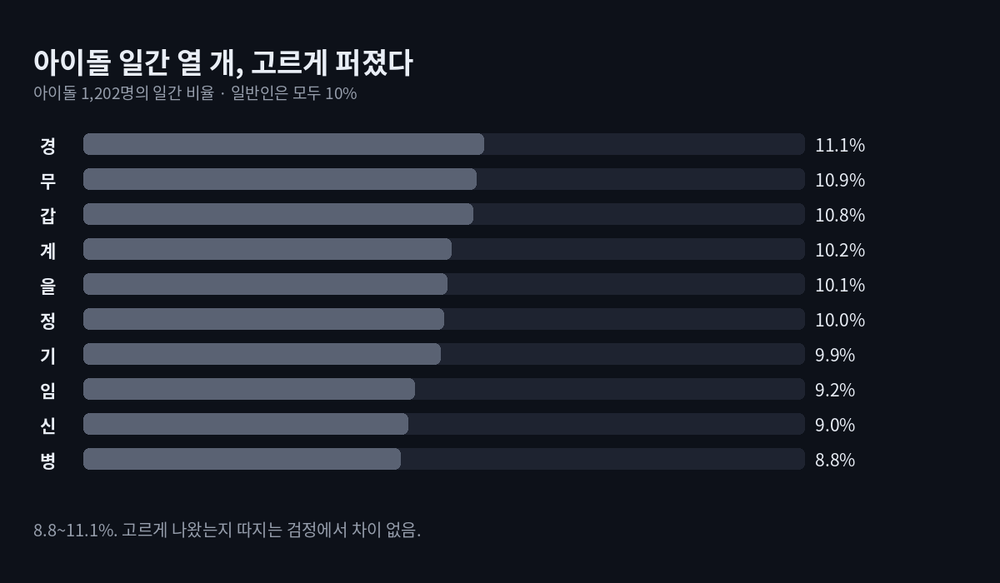
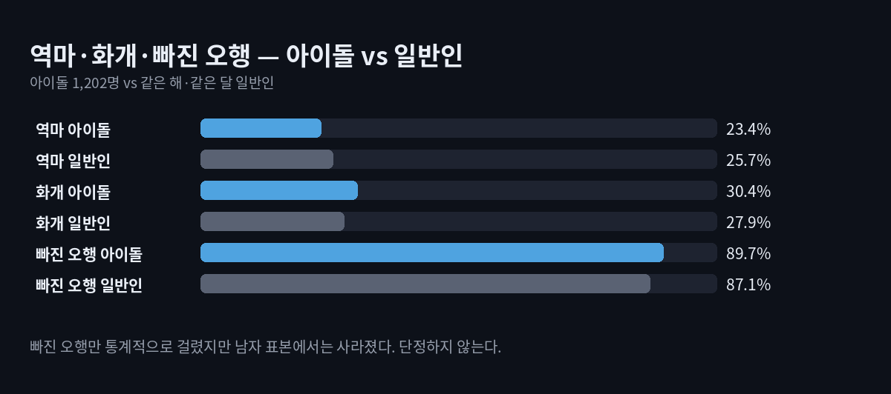

도화살 연예인, 정말 많을까 — 아이돌 1,202명 사주 세어 보니
이 포스팅은 쿠팡 파트너스 활동의 일환으로, 이에 따른 일정액의 수수료를 제공받습니다.
도화살 연예인, 정말 많을까요? 아이돌 1,202명의 생년월일로 세어 보니 도화살 비율은 29.4%, 같은 해·같은 달에 태어난 일반인은 28.7%였습니다. 차이는 0.7%포인트, 통계적으로는 차이가 없다고 봐야 하는 크기입니다.
도화살은 사람을 끄는 매력, 인기의 기운으로 풀이되는 신살입니다. 그래서 "연예인 사주엔 도화가 꼭 있다"는 말이 자주 돕니다. 도화살 글에서 일반인 26만 건을 세어 본 데 이어, 이번엔 무대 위 사람들을 셌습니다.
결론부터
- 아이돌 도화살 29.4% vs 일반인 28.7% — 남자(30.5% vs 29.5%), 여자(28.1% vs 27.8%)로 나눠도 같았습니다.
- 태어난 날의 천간(일간) 열 개도 고르게 나왔습니다. 가장 많은 경(庚) 11.1%, 가장 적은 병(丙) 8.8%로 우연의 범위 안입니다.
- 오행 비중도 일반인과 거의 같았습니다. 토(土)가 27.8%로 가장 많은 것도 똑같습니다.
- 사주만 보고 "연예인이 될 사주"를 가려낼 수 있는 차이는 이 표본에서 보이지 않았습니다.

어떻게 셌나
- 표본: 공개 아이돌 데이터베이스(dbkpop.com 목록을 정리한 공개 자료)에서 한국에서 태어난 아이돌 1,202명(남 619, 여 583, 1977~2005년생)의 생년월일. 이름은 쓰지 않고 날짜만 썼습니다.
- 출생 시간은 공개되지 않으므로 연·월·일 세 기둥, 여섯 글자만 봤습니다. 시간은 정오로 두었습니다.
- 비교 기준(일반인): 아이돌과 같은 해, 같은 달에 태어난 모든 날짜를 같은 비율로 섞어 계산했습니다. 태어난 달이 결과를 흔드는 걸 막기 위해서입니다.
- 검증: 남녀 표본을 나눠 따로 비교하고, 시간을 0시로 바꿔 다시 돌렸습니다. 도화살 결론은 그대로였습니다.
여섯 글자만 보면 도화살 비율이 낮아집니다. 시간 자리까지 여덟 글자를 다 보면 일반인 도화살은 38.5%인데, 시주를 빼면 28.7%가 됩니다. 이 글의 숫자끼리만 비교해 주세요.
입력값은 브라우저 안에서만 계산되고 어디로도 전송되지 않습니다.
이 포스팅은 쿠팡 파트너스 활동의 일환으로, 이에 따른 일정액의 수수료를 제공받습니다.
도화살 연예인이 많다는 말, 맞을까?
이 표본으로는 아니라고 봅니다. 도화 글자(자·오·묘·유)는 띠와 태어난 날에 따라 정해지고, 그건 누구에게나 같은 확률로 돌아옵니다. 1,202명은 차이를 잡아내기에 충분한 숫자인데도 0.7%포인트 차이에 그쳤습니다. 이 정도는 표본을 다시 뽑으면 뒤집힐 수 있는 크기입니다.
도화살이 인기의 기운이라는 풀이와 별개로, 도화살이 있다고 무대에 서는 것도, 없다고 못 서는 것도 아니라는 것이 이 숫자가 말해 주는 전부입니다.
아이돌에게 많은 일간·오행이 있을까?
일간 열 개는 8.8~11.1% 사이에 고르게 퍼졌습니다. 고르게 나왔다고 봐도 되는지 따지는 검정(카이제곱)에서도 차이가 없다는 결과였습니다.

오행 비중도 목 18.6% · 화 17.1% · 토 27.8% · 금 18.3% · 수 18.2%로, 일반인(18.5 · 17.8 · 27.1 · 18.5 · 18.1%)과 1%포인트 안쪽에서 움직였습니다. 토가 가장 많은 이유는 가장 흔한 오행 글에서 본 것과 같습니다.
그래도 눈에 띈 숫자 두 가지

- 빠진 오행이 하나 이상인 사주가 아이돌 89.7%, 일반인 87.1%였습니다. 전체로는 우연이라 보기 어려운 차이였지만, 남자만 보면 차이가 사라지고 여자에서만 남았습니다. 한쪽에서만 나오는 차이라 아직 단정하지 않습니다.
- 화개살은 여자 아이돌 32.8%, 같은 조건의 일반인 26.9%로 차이가 컸습니다. 남자는 28.1% vs 28.8%로 오히려 반대였습니다. 여러 숫자를 동시에 보면 이 정도 우연은 하나쯤 나오기 때문에, 다음 표본으로 다시 확인할 숫자로 남겨 둡니다.
- 역마살은 23.4% vs 25.7%로 아이돌 쪽이 조금 낮았지만 통계적으로는 차이가 없는 범위였습니다. 역마살·화개살 기준은 앞 글과 같습니다.
그래서 내 도화살은?
내 사주의 도화살은 태어난 시간까지 넣어야 정확합니다. 시간 자리에 도화 글자가 들어오는 경우가 많아서, 시간을 빼면 열에 한 번꼴로 판정이 바뀝니다. 출생 시간이 헷갈린다면 태어난 시간을 확인하는 세 가지 방법을 먼저 보세요.
한계
- 공개 데이터베이스의 생년월일을 그대로 썼습니다. 오기·누락이 있을 수 있고, 실린 아이돌이 연예인 전체를 대표하지는 않습니다.
- 출생 시간이 없어 시주를 뺐습니다. 정오 가정은 자정 무렵 태어난 사람의 일주를 바꿀 수 있지만, 0시로 바꿔 돌려도 결론은 같았습니다.
- 실제 출생은 달마다 고르지 않습니다. 그래서 일반인 기준을 '같은 해·같은 달'로 맞췄습니다.
- 검정을 여러 개 했기 때문에, 하나만 낮은 p값이 나온 숫자는 우연일 수 있다고 보고 단정하지 않았습니다.
재미로 보는 콘텐츠입니다. 이 글은 특정인의 사주를 풀이하지 않으며, 숫자는 아이돌 집단과 일반인 집단의 글자 배치 비율을 비교한 결과일 뿐입니다.